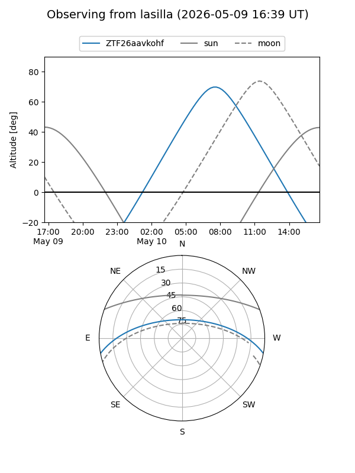
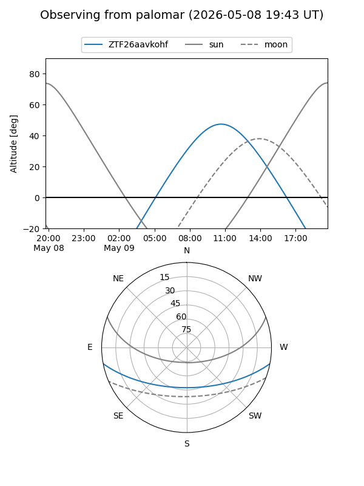

ZTF26aavkohf
Target ZTF26aavkohf at 2026-05-09 10:49
Aliases and brokers:
FINK: link
Lasair: link
ALeRCE: link
alt names
ZTF26aavkohf (ztf,fink_ztf)
Coordinates:
equatorial (ra, dec) = 270.1011,-9.17941
equatorial (HMS+DMS) = 18:00:24.26,-09:10:45.89
galactic (l, b) = (18.8575,+6.96636)
Flags:
Photometry:
last ztfg=19.97
1 ztfg detections
Lightcurve
Visibility


Additional plots